Moving Averages: Introduction
Technical analysis has been around for decades and through the years, traders have seen the invention of hundreds of indicators. While some technical indicators are more popular than others, few have proved to be as objective, reliable and useful as the moving average.
Moving averages come in various forms, but their underlying purpose remains the same: to help technical traders track the trends of financial assets by smoothing out the day-to-day price fluctuations, or noise.
By identifying trends, moving averages allow traders to make those trends work in their favor and increase the number of winning trades. We hope that by the end of this tutorial you will have a clear understanding of why moving averages are important, how they are calculated and how you can incorporate them into your trading strategies.
Moving Averages: What Are They?
Among the most popular technical indicators, moving averages are used to gauge the direction of the current trend. Every type of moving average (commonly written in this tutorial as MA) is a mathematical result that is calculated by averaging a number of past data points. Once determined, the resulting average is then plotted onto a chart in order to allow traders to look at smoothed data rather than focusing on the day-to-day price fluctuations that are inherent in all financial markets.
The simplest form of a moving average, appropriately known as a simple moving average (SMA), is calculated by taking the arithmetic mean of a given set of values. For example, to calculate a basic 10-day moving average you would add up the closing prices from the past 10 days and then divide the result by 10. In Figure 1, the sum of the prices for the past 10 days (110) is divided by the number of days (10) to arrive at the 10-day average. If a trader wishes to see a 50-day average instead, the same type of calculation would be made, but it would include the prices over the past 50 days. The resulting average below (11) takes into account the past 10 data points in order to give traders an idea of how an asset is priced relative to the past 10 days.
| 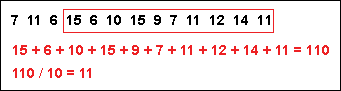 |
| Figure 1 |
{kind=link}
Perhaps you're wondering why technical traders call this tool a "moving" average and not just a regular mean? The answer is that as new values become available, the oldest data points must be dropped from the set and new data points must come in to replace them. Thus, the data set is constantly "moving" to account for new data as it becomes available. This method of calculation ensures that only the current information is being accounted for. In Figure 2, once the new value of 5 is added to the set, the red box (representing the past 10 data points) moves to the right and the last value of 15 is dropped from the calculation. Because the relatively small value of 5 replaces the high value of 15, you would expect to see the average of the data set decrease, which it does, in this case from 11 to 10.
| 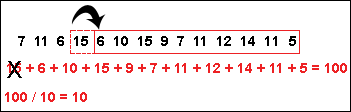 |
| Figure 2 |
{kind=link}
What Do Moving Averages Look Like?
Once the values of the MA have been calculated, they are plotted onto a chart and then connected to create a moving average line. These curving lines are common on the charts of technical traders, but how they are used can vary drastically (more on this later). As you can see in Figure 3, it is possible to add more than one moving average to any chart by adjusting the number of time periods used in the calculation. These curving lines may seem distracting or confusing at first, but you'll grow accustomed to them as time goes on. The red line is simply the average price over the past 50 days, while the blue line is the average price over the past 100 days.
| 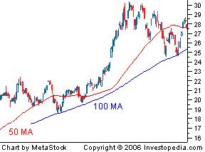 |
| Figure 3 |
{kind=link}
Now that you understand what a moving average is and what it looks like, we'll introduce a different type of moving average and examine how it differs from the previously mentioned simple moving average.
The simple moving average is extremely popular among traders, but like all technical indicators, it does have its critics. Many individuals argue that the usefulness of the SMA is limited because each point in the data series is weighted the same, regardless of where it occurs in the sequence. Critics argue that the most recent data is more significant than the older data and should have a greater influence on the final result. In response to this criticism, traders started to give more weight to recent data, which has since led to the invention of various types of new averages, the most popular of which is the exponential moving average (EMA). (For further reading, see Basics Of Weighted Moving Averages and What's the difference between an SMA and an EMA?)
Exponential Moving Average
The exponential moving average is a type of moving average that gives more weight to recent prices in an attempt to make it more responsive to new information. Learning the somewhat complicated equation for calculating an EMA may be unnecessary for many traders, since nearly all charting packages do the calculations for you. However, for you math geeks out there, here is the EMA equation:
| 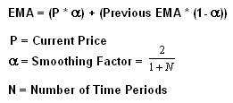 |
| Figure 4 |
{kind=link}
When using the formula to calculate the first point of the EMA, you may notice that there is no value available to use as the previous EMA. This small problem can be solved by starting the calculation with a simple moving average and continuing on with the above formula from there. We have provided you with a sample spreadsheet that includes real-life examples of how to calculate both a simple moving average and an exponential moving average.
The Difference Between the EMA and SMA
Now that you have a better understanding of how the SMA and the EMA are calculated, let's take a look at how these averages differ. By looking at the calculation of the EMA, you will notice that more emphasis is placed on the recent data points, making it a type of weighted average. In Figure 5, the numbers of time periods used in each average is identical (15), but the EMA responds more quickly to the changing prices. Notice how the EMA has a higher value when the price is rising, and falls faster than the SMA when the price is declining. This responsiveness is the main reason why many traders prefer to use the EMA over the SMA.
| 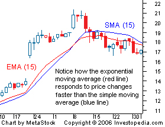 |
| Figure 5 |
{kind=link}
What Do the Different Days Mean?
Moving averages are a totally customizable indicator, which means that the user can freely choose whatever time frame they want when creating the average. The most common time periods used in moving averages are 15, 20, 30, 50, 100 and 200 days. The shorter the time span used to create the average, the more sensitive it will be to price changes. The longer the time span, the less sensitive, or more smoothed out, the average will be. There is no "right" time frame to use when setting up your moving averages. The best way to figure out which one works best for you is to experiment with a number of different time periods until you find one that fits your strategy.
Moving Averages: How To Use Them
Some of the primary functions of a moving average are to identify trends and reversals, measure the strength of an asset's momentum and determine potential areas where an asset will find support or resistance. In this section we will point out how different time periods can monitor momentum and how moving averages can be beneficial in setting stop-losses. Furthermore, we will address some of the capabilities and limitations of moving averages that one should consider when using them as part of a trading routine.
Trend
Identifying trends is one of the key functions of moving averages, which are used by most traders who seek to "make the trend their friend". Moving averages are lagging indicators, which means that they do not predict new trends, but confirm trends once they have been established. As you can see in Figure 1, a stock is deemed to be in an uptrend when the price is above a moving average and the average is sloping upward. Conversely, a trader will use a price below a downward sloping average to confirm a downtrend. Many traders will only consider holding a long position in an asset when the price is trading above a moving average. This simple rule can help ensure that the trend works in the traders' favor.
| 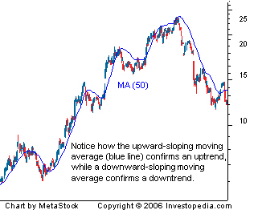 |
| Figure 1 |
{kind=link}
Momentum
Many beginner traders ask how it is possible to measure momentum and how moving averages can be used to tackle such a feat. The simple answer is to pay close attention to the time periods used in creating the average, as each time period can provide valuable insight into different types of momentum. In general, short-term momentum can be gauged by looking at moving averages that focus on time periods of 20 days or less. Looking at moving averages that are created with a period of 20 to 100 days is generally regarded as a good measure of medium-term momentum. Finally, any moving average that uses 100 days or more in the calculation can be used as a measure of long-term momentum. Common sense should tell you that a 15-day moving average is a more appropriate measure of short-term momentum than a 200-day moving average.
One of the best methods to determine the strength and direction of an asset's momentum is to place three moving averages onto a chart and then pay close attention to how they stack up in relation to one another. The three moving averages that are generally used have varying time frames in an attempt to represent short-term, medium-term and long-term price movements. In Figure 2, strong upward momentum is seen when shorter-term averages are located above longer-term averages and the two averages are diverging. Conversely, when the shorter-term averages are located below the longer-term averages, the momentum is in the downward direction.
| 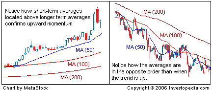 |
| Figure 2 |
{kind=link}
Support
Another common use of moving averages is in determining potential price supports. It does not take much experience in dealing with moving averages to notice that the falling price of an asset will often stop and reverse direction at the same level as an important average. For example, in Figure 3 you can see that the 200-day moving average was able to prop up the price of the stock after it fell from its high near $32. Many traders will anticipate a bounce off of major moving averages and will use other technical indicators as confirmation of the expected move.
| 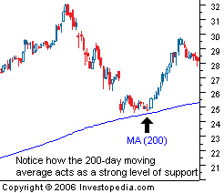 |
| Figure 3 |
{kind=link}
Once the price of an asset falls below an influential level of support, such as the 200-day moving average, it is not uncommon to see the average act as a strong barrier that prevents investors from pushing the price back above that average. As you can see from the chart below, this resistance is often used by traders as a sign to take profits or to close out any existing long positions. Many short sellers will also use these averages as entry points because the price often bounces off the resistance and continues its move lower. If you are an investor who is holding a long position in an asset that is trading below major moving averages, it may be in your best interest to watch these levels closely because they can greatly affect the value of your investment.
| 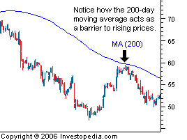 |
| Figure 4 |
{kind=link}
The support and resistance characteristics of moving averages make them a great tool for managing risk. The ability of moving averages to identify strategic places to set stop-loss orders allows traders to cut off losing positions before they can grow any larger. As you can see in Figure 5, traders who hold a long position in a stock and set their stop-loss orders below influential averages can save themselves a lot of money. Using moving averages to set stop-loss orders is key to any successful trading strategy.
| 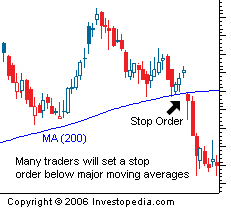 |
| Figure 5 |
{kind=link}
Moving Averages: Factors To Consider
Data Used in Calculation
Most moving averages take the closing prices of a given asset and factor them into the calculation. We thought it would be important to note that this does not always need to be the case. It is possible to calculate a moving average by using the open, close, high, low or even the median. Even though there is little difference between these calculations when plotted on a chart, the slight difference could still impact your analysis.
Finding an Appropriate Time Periods
Because most MAs represent the average of all the applicable daily prices, it should be noted that the time frame does not always need to be in days. Moving averages can also be calculated using minutes, hours, weeks, months, quarters, years etc. Why would a day trader care about how a 50-day moving average will affect the price over the upcoming weeks? On the other hand, a day trader would want to pay attention to a 50-minute average to get an idea of the relative cost of the security compared to the past hour. Some traders may even use the average price over the past three minutes to gauge an uptake in short-term momentum.
No Average is Foolproof
As you know, nothing in the financial markets is for certain - certainly not when it comes to using technical indicators. If a stock bounced off the support of a major average every time it came close, we would all be rich. One of the major disadvantages of using moving averages is that they are relatively useless when an asset is trending sideways, compared to the times when a strong trend is present. As you can see in Figure 1, the price of an asset can pass through a moving average many times when the trend is moving sideways, making it difficult to decide how to trade. This chart is a good example of how the support and resistance characteristics of moving averages are not always present.
| 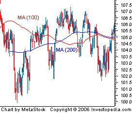 |
| Figure 1 |
{kind=link}
Responsiveness to Price Action
Traders who use moving averages in their trading will quickly admit that there is a battle between trying to make a moving average responsive to changes in trend while not allowing it to be so sensitive that it causes a trader to prematurely enter or exit a position. Short-term moving averages can be useful in identifying changing trends before a large move occurs, but the downside is that this technique can also lead to being whipsawed in and out of a position because these averages respond very quickly to changing prices. Because the quality of the transaction signals can vary drastically depending on the time periods used in the calculation, it is highly recommended to look at other technical indicators for confirmation of any move predicted by a moving average. (For more on various indicators, see Introduction To Technical Analysis.)
Beware of the Lag
Because moving averages are a lagging indicator, transaction signals will always occur after the price has moved enough in one direction to cause the moving average to respond. This lagging characteristic can often work against a trader and cause him or her to enter into a position at the least opportune time. For example, the only way for a short-term moving average to cross above a long-term moving average is for the price to have recently moved higher - many traders will use this bullish crossover as a buy signal. One major problem that often arises is that the price may have already experienced a large increase before the transaction signal is presented.As you can see in Figure 2, the large price gap creates a buy signal in late August, but this signal is too late because the price has already moved up by more than 25% over the past 12 days and is becoming exhausted. In this case, the lagging aspect of a moving average would work against the trader and likely result in a losing trade. Check out the next section of this tutorial to learn about trading strategies involving moving averages.
| 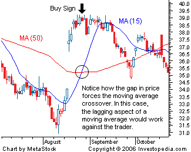 |
|
Figure 2 |
{kind=link}
Moving Averages: Strategies
Different investors use moving averages for different reasons. Some use them as their primary analytical tool, while others simply use them as a confidence builder to back up their investment decisions. In this section, we'll present a few different types of strategies - incorporating them into your trading style is up to you!
Crossovers
A crossover is the most basic type of signal and is favored among many traders because it removes all emotion. The most basic type of crossover is when the price of an asset moves from one side of a moving average and closes on the other. Price crossovers are used by traders to identify shifts in momentum and can be used as a basic entry or exit strategy. As you can see in Figure 1, a cross below a moving average can signal the beginning of a downtrend and would likely be used by traders as a signal to close out any existing long positions. Conversely, a close above a moving average from below may suggest the beginning of a new uptrend.
| 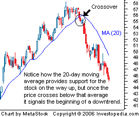 |
| Figure 1 |
{kind=link}
The second type of crossover occurs when a short-term average crosses through a long-term average. This signal is used by traders to identify that momentum is shifting in one direction and that a strong move is likely approaching. A buy signal is generated when the short-term average crosses above the long-term average, while a sell signal is triggered by a short-term average crossing below a long-term average. As you can see from the chart below, this signal is very objective, which is why it's so popular.
| 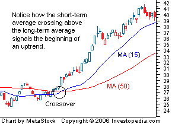 |
| Figure 2 |
{kind=link}
Triple Crossover and the Moving Average Ribbon
Additional moving averages may be added to the chart to increase the validity of the signal. Many traders will place the five-, 10-, and 20-day moving averages onto a chart and wait until the five-day average crosses up through the others – this is generally the primary buy sign. Waiting for the10-day average to cross above the 20-day average is often used as confirmation, a tactic that often reduces the number of false signals. Increasing the number of moving averages, as seen in the triple crossover method, is one of the best ways to gauge the strength of a trend and the likelihood that the trend will continue.
This begs the question: What would happen if you kept adding moving averages? Some people argue that if one moving average is useful, then 10 or more must be even better. This leads us to a technique known as the moving average ribbon. As you can see from the chart below, many moving averages are placed onto the same chart and are used to judge the strength of the current trend. When all the moving averages are moving in the same direction, the trend is said to be strong. Reversals are confirmed when the averages cross over and head in the opposite direction.
| 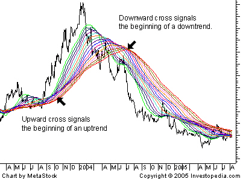 |
| Figure 3 |
{kind=link}
Responsiveness to changing conditions is accounted for by the number of time periods used in the moving averages. The shorter the time periods used in the calculations, the more sensitive the average is to slight price changes. One of the most common ribbons starts with a 50-day moving average and adds averages in 10-day increments up to the final average of 200. This type of average is good at identifying long-term trends/reversals.
Filters
A filter is any technique used in technical analysis to increase one's confidence about a certain trade. For example, many investors may choose to wait until a security crosses above a moving average and is at least 10% above the average before placing an order. This is an attempt to make sure the crossover is valid and to reduce the number of false signals. The downside about relying on filters too much is that some of the gain is given up and it could lead to feeling like you've "missed the boat". These negative feelings will decrease over time as you constantly adjust the criteria used for your filter. There are no set rules or things to look out for when filtering; it's simply an additional tool that will allow you to invest with confidence.
Moving Average Envelope
Another strategy that incorporates the use of moving averages is known as an envelope. This strategy involves plotting two bands around a moving average, staggered by a specific percentage rate. For example, in the chart below, a 5% envelope is placed around a 25-day moving average. Traders will watch these bands to see if they act as strong areas of support or resistance. Notice how the move often reverses direction after approaching one of the levels. A price move beyond the band can signal a period of exhaustion, and traders will watch for a reversal toward the center average.
| 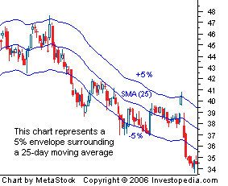 |
| Figure 4 |
{kind=link}
Moving Averages: Different Flavors
Most of the methods in which moving averages are used in trading have been addressed within this tutorial, but this tool has also been used in the development of other indicators. In this section, we will give you a basic introduction to a couple of these indicators, but most will require further study if you want to incorporate them into your strategy.
Moving Average Convergence Divergence (MACD)
One of the most popular technical indicators, the moving average convergence divergence (MACD) is used by traders to monitor the relationship between two moving averages. It is generally calculated by subtracting a 26-day exponential moving average from a 12-day EMA. When the MACD has a positive value, the short-term average is located above the long-term average. As mentioned earlier, this stacking order of the averages is an indication of upward momentum. A negative value occurs when the short-term average is below the long-term average - a sign that the current momentum is in the downward direction. Many traders will also watch for a move above or below the zero line because this signals the position where the two averages are equal (crossover strategy applies here). A move above zero would be used as a buy sign, while a cross below zero can be used as a sell signal. (For more on this, read Moving Average Convergence Divergence - Part 1 and Part 2.)
Signal/Trigger Line
Moving averages aren't limited to just stock prices; MAs can be created for any form of data that changes frequently. It is even possible to take a moving average of a technical indicator such as the MACD. For example, a nine-period EMA of the MACD values is added to the chart in Figure 1 in an attempt to form transaction signals. As you can see, buy signals are generated when the value of the indicator crosses above the signal line (dotted line), while short signals are generated from a cross below the signal line. It is important to note that regardless of the indicator being used, a move beyond a signal line is interpreted in the same manner; the only thing that varies is the number of time periods used to create it.

|
| Figure 1 |
Bollinger Band®
A Bollinger Band® technical indicator looks similar to the moving average envelope, but differs in how the outer bands are created. The bands of this indicator are generally placed two standard deviations away from a simple moving average. In general, a move toward the upper band can often suggest that the asset is becoming overbought, while a move close to the lower band can suggest the asset is becoming oversold. Since standard deviation is used as a statistical measure of volatility, this indicator adjusts itself to market conditions. The tightening of the bands is often used by traders as an early indication that overall volatility may be about to increase and that a trader may want to wait for a sharp price move. (For further reading, check out The Basics Of Bollinger Bands® and our Technical Analysis tutorial.)
| 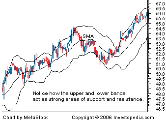 |
| Figure 2 |
{kind=link}